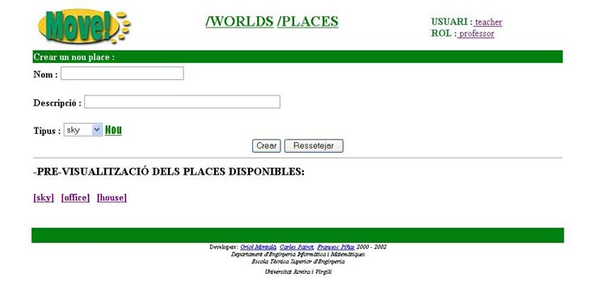

2.3.1 Crear un nou Place

Per crear un nou Place nom�s caldr� omplir els seg�ents camps,
- Nom
- Descripci�
- Tipus
Abans de decidir el tipus de place, podem visualitzar-lo clicant sobre el seu nom en l'apartat de "PRE-VISUALITZACI� DE PLACES DISPONIBLES".
Una vegada introduides totes les dades haurem de pr�mer el bot�  . Autom�ticament tornarem a la pantalla anterior i veurem com el nostre nou Place ja apareix a la taula de Places disponibles.
. Autom�ticament tornarem a la pantalla anterior i veurem com el nostre nou Place ja apareix a la taula de Places disponibles.
Per altra banda si cliquem sobre podrem pujar nous tipus de Places.